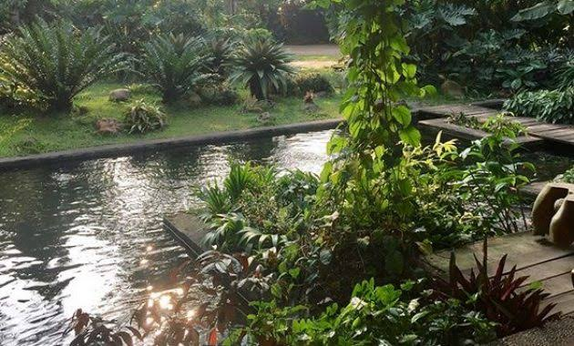
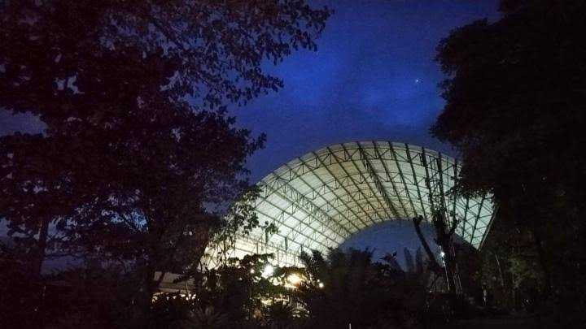

Wisata Kuliner Sambil Mancing dan Wisata Edukasi di Godong Ijo

Oleh Muhammad Zainuddin Basyar
-
Apabila Anda jenuh dengan rutinitas sehari-hari dan ingin melepaskan lelah, Anda dapat mencoba mengunjungi Godong Ijo. Selain akan memanjakan Anda, Godong Ijo juga akan menjadi tempat rekreasi yang mendidik dan menyenangkan untuk anak-anak. Dengan suasana alami, berbagai aktivitas bisa dilakukan bersama keluarga tercinta termasuk pemancingan. Apa saja yang bisa Anda nikmati di Godong Ijo?
Godong Ijo
 Pertama kali memasuki Godong Ijo, Anda serasa memasuki "HUTAN" karena kawasan seluas sekitar 3 hektar ini dihiasi berbagai pepohonan langka yang berusia puluhan tahun sehingga menghadirkan kesan Hutan Alami. Anak-anak khususnya akan senang berada di Godong Ijo karena dalam kawasan ini terdapat Kolam Ikan Koi, Kolam Ikan Alligator, Kolam Arapaima Gigas. Anda dan anak-anak dapat melihat Kura–Kura Raksasa terbesar di dunia, Ular Raksasa terbesar di dunia, Ular Phyton Albino, ditambah tempat bermain anak yang luas dapat menampung sekitar 300 anak yang akan menjadi tempat favorit si kecil.
Baca Juga : Keindahan Alam Gunung Bromo
Godong Ijo juga dapat menjadi salah satu tujuan wisata kuliner Anda dengan berbagai pilihan menu makanan istimewa dan suasana cafe yang asri. Untuk membuat Anda nyaman, furniture yang digunakan di cafe ini bukanlah furniture sembarangan, meja round table yang terbuat dari kayu jati pilihan yang berusia ratusan tahun dan juga kursi & furniture yang antik dan elegant dipersiapkan agar Anda merasa nyaman. Dengan kesan mewah yang sangat terasa di cafe ini, membuat cafe ini menjadi tempat yang sangat cocok untuk menjamu relasi bisnis, meeting, family gathering dan acara istimewa lainnya bersama keluarga.
Baca Juga : Silancur Highland Magelang
Menu khas cafe ini adalah "Patin & Gurame Bambu Bakar", merupakan salah satu menu yang paling banyak diincar pengunjung karena rasanya sangat unik dan orisinil dengan harga yang terjangkau, yaitu berkisar Rp.60.000,- s/d Rp.96.000,- per porsi untuk ukuran 6-7 ons. Menu khas lain yang wajib dicoba adalah "Nasi Gonjleng" dan "Sayur Asem Kecombrang Daging" atau "Sayur Asem Kecombrang Udang" yang hanya ada di Godong Ijo, dengan kisaran harga Rp.20.000,- per porsi.
Selain menu dari dalam negeri, Anda dapat mencicip "Aneka Masakan Thailand", mulai dari Nasi Goreng Thailand, Tom Yum, Ayam Kacang Mede ala Thailand hingga panganan ringan ala Thailand yaitu Singkong Thailand. Juga tersedia "Aneka Masakan Khas Sunda" yaitu Gurame,Patin,Mas dapat disajikan dengan dibakar, digoreng atau dimasak kuah asem. Harganya berkisar mulai dari Rp. 30.000,- s/d Rp.55.000,- per ekor berat sekitar 6 – 7 ons.
Baca Juga : Candi Prambanan
Cafe ini juga dilengkapi Danau Pemancingan dengan luas 5.000 m2. Anak-anak atau untuk pemula dapat merasakan serunya memancing dengan memancing di danau kecil yang luasnya sekitar 400 m2 yang aman bagi anak-anak. Danau dilengkapi saung, rakit dan fasilitas free Hot Spot.
Danau Pemancingan sangat menarik karena terdapat ikan raksasa "Jenghis Khan", yaitu sejenis Thailand Cat Fish yang bobotnya mencapai 33 kilogram dan berjumlah 4 ekor. Ada juga "Ikan Bulan Bulan" yang beratnya sekitar 2 – 5 kilogram per ekor dengan jumlah sekitar 30 ekor. Berbagai Ikan Super dengan bobot 3 – 10 kilo gram sangat banyak di Danau Pemancingan. Jumlah seluruh ikan yang dapat dipancing sekitar 500 ekor, jumlah yang cukup banyak karena di Indonesia sangat jarang ditemui pemancingan seperti ini. Tidak perlu jauh-jauh ke luar negeri untuk merasakan tantangan berburu ikan raksasa, cukup datang ke Pemancingan Godong Ijo untuk merasakannya.
Baca Juga : Judulle Yokepet
Variasi harga yang ditawarkan dalam kegiatan memancing sangat menarik. Pengunjung dapat memilih akan memancing Sistem Kiloan yaitu hasil pancing ditimbang berdasarkan jenis dan berat ikan (Ikan Patin, Mas, Lele, Mujair, Nila, Gabus dll.) dengan kisaran harga Rp. 20.000,- s/d Rp. 40.000,- per kilo gram atau dengan sistem "Tarikan dan Jackpot" dengan harga sekitar Rp.80.000,- s/d Rp. 125.000,- per 4 jam.
Untuk Anda yang hobi tantangan, silahkan mendaftar "Perlombaan Mancing Galatama" diadakan mingguan dan bulanan. Perlombaan mancing mingguan diadakan setiap malam minggu pukul 18.00 – 22.00 WIB dengan biaya Rp 150.000,- per orang. Sedangkan secara bulanan diadakan setiap Sabtu awal bulan pada pukul 18.00 – 22.00 WIB dengan biaya Rp 200.000,- per orang. Perlombaan ini berhadiah uang tunai dan hadiah hiburan lainnya yang menarik.
Wisata Edukasi
Ternyata tidak mudah memilih tempat dengan konsep "Belajar sambil Berwisata" sekaligus, tetapi Anda dapat menemukannya di Godong Ijo. Terdapat aneka program wisata edukasi yaitu:
-
"Young Grenners"
Materi: Opera & Movie mengenai Global Warming, Bercocok Tanam Modern, Reptile Corner & Interaction, Memandikan dan Memberi Makan "Kura – Kura Raksasa", Keliling Dunia dengan Flora & Fauna, Vertical Garden / Pot Scaping, Out Bond Games / Team Building Games. Kisaran harga Rp. 70.000,- s/d. Rp. 125.000,- per orang.
-
"Fast Learning Camp"
Materi Jitu: Meningkatkan Daya Fokus (High Focus), Mengingat Jangka Panjang (Memo Brain), Teknik Rahasia Sukses Ujian (Secrets Exam Technique), Memperkuat Daya Ingat (Super Memory), Meringkas Efektif (Mind Mapping), dikombinasikan dengan Enviroment Knowledge dan Outbond Games / Team Building Games. Kisaran harga Rp. 150.000,- s/d. Rp. 200.000,- per orang.
-
"Go Organic"
Materi Jitu: Bercocok Tanam dengan Media Tanam Organik dan Insektisida Organik dikombinasikan dengan Enviroment Knowledge dan Outbond Games / Team Building Games. Kisaran harga Rp. 90.000,- s/d. Rp. 150.000,- per orang.
-
"Koki Cilik"
Belajar memasak aneka masakan "Kiddie Menu". Hasilnya untuk dimakan bersama-sama, dikombinasikan dengan "Fun Games, Keliling Dunia dengan Flora & Fauna, Bercocok Tanam" kisaran harga Rp. 60.000,- s/d. Rp. 150.000,- per orang.
-
"Animal Encounter"
Mengulik Rahasia berbagai Hewan Piaraan (Pets) yang dibimbing langsung oleh para Dokter Hewan.
Customer List / Daftar Pelanggan Wisata Edukasi Godong Ijo
Berikut ini beberapa pelanggan yang mengunjungi Wisata Edukasi Godong Ijo:
- Al-Azhar Syifa Budi, Al-Ikhlas, Bina Bangsa, BPK Penabur Bintaro, BPK Penabur Cawang, Bumble Bee, Citra Alam, Doctor Rabbit, Dwi Matra, Darma Karya, Harapan Bangsa, Holly Angels, Ipeka Sunter, Jakarta Montessori Sch., Kak Seto Home Schooling, Kanaan Global Sch., Keen Kids, Kinder World,Lentera Int. Sch., Marsudirini, Nurul Hikmah, Permata Bunda, PSB Singapore Int.,St. John,St. Nicholas, St.Peter’s, St.Caroline, Super Kids, Westin School, dll.
-